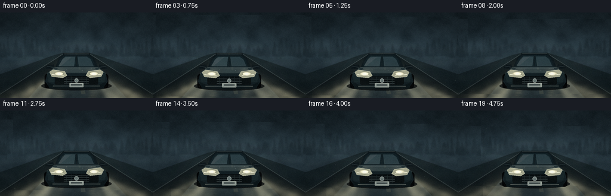
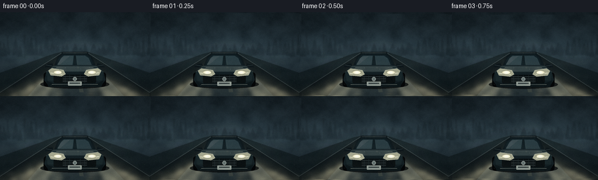

CODING AGENTS AS PIXEL WORLD MODELS
traex/GPT-5.6-Sol · phygen_051
点击播放 · 原生 RGB 像素
逐轮保存的候选
回放视频、检查图与代码变化。
每份候选均可单独播放。实际图片检查记录在下方工具轨迹中。
候选 01播放与检查图
点击播放 · 原生 RGB 像素


展开代码变化
--- 上一保存版本
+++ 本次保存版本
@@ -0,0 +1,259 @@
+from pathlib import Path
+import math
+import numpy as np
+from PIL import Image, ImageDraw, ImageFilter
+import artifact_io
+
+# Procedural, supersampled cinematic rendering of headlights scattering through fog.
+W, H, N = 256, 144, 20
+S = 3
+WW, HH = W*S, H*S
+rng = np.random.default_rng(51051)
+
+
+def sc(v):
+ return int(round(v*S))
+
+def pts(seq):
+ return [(sc(x), sc(y)) for x, y in seq]
+
+def layer():
+ return Image.new("RGBA", (WW, HH), (0, 0, 0, 0))
+
+def alpha_comp(base, over):
+ return Image.alpha_composite(base, over)
+
+def smooth_noise(seed, gw, gh):
+ r = np.random.default_rng(seed)
+ a = (r.random((gh, gw))*255).astype(np.uint8)
+ # Wrap-like generous canvas, then upscale.
+ im = Image.fromarray(a, 'L').resize((WW, HH), Image.Resampling.BICUBIC)
+ return np.asarray(im, dtype=np.float32)/255.0
+
+noise_coarse = smooth_noise(111, 12, 8)
+noise_medium = smooth_noise(222, 28, 18)
+noise_fine = smooth_noise(333, 70, 42)
+noise_road = smooth_noise(444, 35, 30)
+Y, X = np.mgrid[0:HH, 0:WW].astype(np.float32)
+xn, yn = X/S, Y/S
+
+# Stable distant silhouettes.
+def background_silhouettes():
+ ov = layer(); d = ImageDraw.Draw(ov, 'RGBA')
+ # distant tree line, heavily muted by fog
+ rr = np.random.default_rng(87)
+ x = -8
+ while x < 270:
+ th = float(rr.uniform(12, 30)); tw = float(rr.uniform(7, 15))
+ if 78 < x < 180: th *= .58
+ base = 74 + rr.uniform(-2, 3)
+ col = (17, 28, 33, int(rr.uniform(55, 92)))
+ d.polygon(pts([(x,base),(x+tw*.5,base-th),(x+tw,base)]), fill=col)
+ d.polygon(pts([(x+1,base-5),(x+tw*.5,base-th-6),(x+tw-1,base-5)]), fill=col)
+ x += rr.uniform(7, 12)
+ # road-side poles dissolving in mist
+ for x, top, a in [(42,38,65),(214,43,54)]:
+ d.rectangle((sc(x-.7),sc(top),sc(x+.7),sc(78)), fill=(21,30,34,a))
+ d.line(pts([(x,top+2),(x+(-7 if x<128 else 7),top+2)]), fill=(18,28,32,a), width=sc(.7))
+ return ov.filter(ImageFilter.GaussianBlur(sc(1.1)))
+
+BG = background_silhouettes()
+
+
+def make_beam_mask(poly, blur=4):
+ m = Image.new('L',(WW,HH),0); md = ImageDraw.Draw(m)
+ md.polygon(pts(poly), fill=255)
+ return np.asarray(m.filter(ImageFilter.GaussianBlur(sc(blur))), dtype=np.float32)/255.0
+
+# Broad cones and narrower shafts. Masks are modulated every frame by moving fog density.
+left_broad = make_beam_mask([(104,99),(-18,146),(106,146)], 6)
+right_broad = make_beam_mask([(152,99),(150,146),(275,146)], 6)
+left_core = make_beam_mask([(104,100),(17,145),(73,145)], 3)
+right_core = make_beam_mask([(152,100),(183,145),(245,145)], 3)
+# A soft central backscatter haze around both sources.
+radial = np.exp(-(((xn-128)/93)**2 + ((yn-109)/53)**2)*2.0)
+
+
+def render_car(frame):
+ # Tiny approach and suspension movement gives life without destabilizing the shot.
+ k = 0.985 + frame*0.0015
+ cy = 106 + 0.25*math.sin(frame*.46)
+ cx = 128
+ def p(x,y): return (cx+(x-128)*k, cy+(y-106)*k)
+ def P(seq): return pts([p(x,y) for x,y in seq])
+ ov = layer(); d = ImageDraw.Draw(ov, 'RGBA')
+ # ground contact and tires
+ d.ellipse((sc(69),sc(cy+10),sc(187),sc(cy+25)), fill=(3,6,8,185))
+ d.rounded_rectangle((sc(p(74,103)[0]),sc(p(74,103)[1]),sc(p(92,128)[0]),sc(p(92,128)[1])), radius=sc(5), fill=(5,7,8,255))
+ d.rounded_rectangle((sc(p(164,103)[0]),sc(p(164,103)[1]),sc(p(182,128)[0]),sc(p(182,128)[1])), radius=sc(5), fill=(5,7,8,255))
+ # mirrors
+ d.polygon(P([(89,87),(78,89),(76,94),(91,95)]), fill=(14,23,27,255))
+ d.polygon(P([(167,87),(178,89),(180,94),(165,95)]), fill=(14,23,27,255))
+ d.line(P([(78,90),(89,92)]), fill=(86,104,106,105), width=sc(1))
+ d.line(P([(178,90),(167,92)]), fill=(86,104,106,105), width=sc(1))
+ # cabin/roof shell
+ d.polygon(P([(91,95),(98,76),(106,69),(150,69),(158,76),(166,95)]), fill=(15,25,29,255))
+ d.line(P([(107,69),(149,69)]), fill=(102,119,119,90), width=sc(1))
+ # windshield, foggy reflections
+ d.polygon(P([(101,77),(107,72),(148,72),(155,77),(160,92),(95,92)]), fill=(17,31,36,255))
+ d.polygon(P([(104,78),(109,74),(126,74),(124,90),(98,90)]), fill=(48,68,73,185))
+ d.polygon(P([(130,74),(146,74),(152,78),(157,90),(132,90)]), fill=(40,59,65,195))
+ d.polygon(P([(106,76),(120,74),(102,89),(98,89)]), fill=(137,154,151,35))
+ d.line(P([(128,73),(128,91)]), fill=(10,18,21,210), width=sc(1.1))
+ # hood and full front body
+ d.polygon(P([(91,91),(165,91),(177,101),(181,116),(174,126),(82,126),(75,116),(79,101)]), fill=(19,31,35,255))
+ d.polygon(P([(91,92),(165,92),(174,102),(82,102)]), fill=(35,49,52,255))
+ d.polygon(P([(97,94),(159,94),(169,101),(87,101)]), fill=(53,68,69,120))
+ d.line(P([(96,94),(160,94)]), fill=(121,135,132,90), width=sc(.7))
+ # fenders / front sculpting
+ d.polygon(P([(78,102),(94,99),(111,104),(108,117),(81,117)]), fill=(25,39,42,255))
+ d.polygon(P([(178,102),(162,99),(145,104),(148,117),(175,117)]), fill=(25,39,42,255))
+ # dark front fascia
+ d.rounded_rectangle((sc(p(91,107)[0]), sc(p(91,107)[1]), sc(p(165,122)[0]), sc(p(165,122)[1])), radius=sc(3), fill=(7,13,15,245))
+ # grille horizontal slats
+ for yy in [110,113,116,119]:
+ d.line(P([(107,yy),(149,yy)]), fill=(85,96,96,130), width=sc(.65))
+ for xx in [111,119,128,137,145]:
+ d.line(P([(xx,108),(xx,121)]), fill=(29,41,43,210), width=sc(.7))
+ # emblem
+ d.ellipse((sc(p(124.5,111)[0]),sc(p(124.5,111)[1]),sc(p(131.5,118)[0]),sc(p(131.5,118)[1])), fill=(128,143,140,180), outline=(205,213,203,170), width=sc(1))
+ # headlights housings
+ for poly in [[(82,100),(88,96),(108,99),(112,106),(105,110),(86,108)],
+ [(174,100),(168,96),(148,99),(144,106),(151,110),(170,108)]]:
+ d.polygon(P(poly), fill=(168,170,145,255), outline=(204,210,193,255))
+ # inner optical detail
+ d.ellipse((sc(p(91,99)[0]),sc(p(98,100)[1]),sc(p(105,106)[0]),sc(p(105,106)[1])), fill=(255,248,205,255))
+ d.ellipse((sc(p(151,100)[0]),sc(p(151,100)[1]),sc(p(165,106)[0]),sc(p(165,106)[1])), fill=(255,248,205,255))
+ d.line(P([(86,104),(106,106)]), fill=(255,255,229,235), width=sc(1.2))
+ d.line(P([(170,104),(150,106)]), fill=(255,255,229,235), width=sc(1.2))
+ # bumper and plate
+ d.polygon(P([(78,117),(91,122),(165,122),(178,117),(174,128),(82,128)]), fill=(13,23,26,255))
+ d.line(P([(88,124),(168,124)]), fill=(95,105,103,120), width=sc(1))
+ d.rounded_rectangle((sc(p(116,119)[0]),sc(p(116,119)[1]),sc(p(140,126)[0]),sc(p(140,126)[1])), radius=sc(1), fill=(166,177,169,215), outline=(225,230,215,170), width=sc(.5))
+ d.rectangle((sc(p(119,121)[0]),sc(p(119,121)[1]),sc(p(137,123)[0]),sc(p(137,123)[1])), fill=(67,77,76,150))
+ # crisp hood edges and water beads
+ d.line(P([(79,102),(91,92),(165,92),(177,102)]), fill=(104,120,119,105), width=sc(.8))
+ for bx,by in [(111,95),(138,97),(153,94),(101,98)]:
+ d.ellipse((sc(p(bx,by)[0]),sc(p(bx,by)[1]),sc(p(bx+.7,by+.35)[0]),sc(p(bx+.7,by+.35)[1])), fill=(199,209,201,95))
+ return ov
+
+
+def frame_image(i):
+ t = i / 4.0
+ # Cold, opaque atmospheric base with a brighter horizon.
+ horizon = np.exp(-((yn-66)/31)**2)
+ sky_grad = np.clip((yn/144),0,1)
+ drift1 = np.roll(noise_coarse, (int(i*1.4*S), int(i*2.0*S)), axis=(0,1))
+ drift2 = np.roll(noise_medium, (-int(i*.6*S), int(i*1.1*S)), axis=(0,1))
+ fog = .54*drift1 + .30*drift2 + .16*noise_fine
+ base = np.empty((HH,WW,3),dtype=np.float32)
+ base[:,:,0] = 20 + 18*horizon + 19*fog
+ base[:,:,1] = 31 + 24*horizon + 23*fog
+ base[:,:,2] = 37 + 27*horizon + 25*fog
+ # Slightly darker upper night sky.
+ base *= (0.83 + 0.17*sky_grad[:,:,None])
+ im = Image.fromarray(np.uint8(np.clip(base,0,255)), 'RGB').convert('RGBA')
+ im = alpha_comp(im, BG)
+
+ # Road and verges, converging through the fog.
+ ov = layer(); d = ImageDraw.Draw(ov,'RGBA')
+ d.polygon(pts([(106,68),(150,68),(268,144),(-12,144)]), fill=(10,18,21,218))
+ d.polygon(pts([(-12,144),(106,68),(93,71),(0,104)]), fill=(12,22,24,150))
+ d.polygon(pts([(268,144),(150,68),(163,72),(256,104)]), fill=(12,22,24,150))
+ # damp road surface sheen
+ d.polygon(pts([(113,70),(143,70),(212,144),(48,144)]), fill=(36,48,49,36))
+ # center line disappearing in the haze
+ d.polygon(pts([(126.8,70),(129.2,70),(135,96),(132,96)]), fill=(163,161,123,42))
+ d.polygon(pts([(131,104),(136,104),(143,137),(136,137)]), fill=(184,176,125,34))
+ # edge highlights
+ d.line(pts([(105,70),(-4,140)]), fill=(114,127,121,42), width=sc(.7))
+ d.line(pts([(151,70),(260,140)]), fill=(114,127,121,42), width=sc(.7))
+ im = alpha_comp(im, ov.filter(ImageFilter.GaussianBlur(sc(.35))))
+
+ # Volumetric light: brightness follows both cone geometry and local fog density.
+ shifted_fog = .58*np.roll(noise_coarse, int(i*2.2*S), axis=1) + .42*np.roll(noise_medium, -int(i*.9*S), axis=0)
+ cones = .72*(left_broad+right_broad) + .72*(left_core+right_core)
+ density = np.clip(.28 + .98*shifted_fog,0,1.35)
+ beam = np.clip(cones*density,0,1.45)
+ # strongest near the lower foreground but still clearly connects to lamps
+ longitudinal = np.clip((yn-94)/48,0,1)
+ beam *= (.64 + .36*longitudinal)
+ glow_strength = beam*0.55 + radial*0.12
+ light_arr = np.zeros((HH,WW,4),dtype=np.uint8)
+ light_arr[:,:,:3] = np.array([248,237,190],dtype=np.uint8)
+ light_arr[:,:,3] = np.uint8(np.clip(glow_strength*150,0,170))
+ im = alpha_comp(im, Image.fromarray(light_arr,'RGBA'))
+
+ # Distinct light shafts inside the larger cone, softened by heavy mist.
+ shafts = layer(); sd = ImageDraw.Draw(shafts,'RGBA')
+ pulse = 0.94 + .035*math.sin(i*.58)
+ sd.polygon(pts([(103,101),(7,144),(43,144)]), fill=(255,245,202,int(34*pulse)))
+ sd.polygon(pts([(106,101),(55,144),(83,144)]), fill=(255,248,207,int(50*pulse)))
+ sd.polygon(pts([(150,101),(176,144),(203,144)]), fill=(255,248,207,int(50*pulse)))
+ sd.polygon(pts([(153,101),(213,144),(255,144)]), fill=(255,245,202,int(34*pulse)))
+ im = alpha_comp(im, shafts.filter(ImageFilter.GaussianBlur(sc(3.5))))
+
+ # Long wet-road reflections, broken into irregular segments by puddles/fog.
+ refl = layer(); rd = ImageDraw.Draw(refl,'RGBA')
+ for x0,sgn in [(101,-1),(155,1)]:
+ for j in range(9):
+ yy = 107+j*4.5
+ wid = 2.2+j*.75
+ jitter = math.sin(j*2.2+i*.3)*1.5
+ alpha = int((68-j*4)*(0.82+0.18*math.sin(i*.31+j)))
+ rd.ellipse((sc(x0+jitter-wid),sc(yy),sc(x0+jitter+wid),sc(yy+1.4+j*.12)), fill=(255,229,167,max(5,alpha)))
+ im = alpha_comp(im, refl.filter(ImageFilter.GaussianBlur(sc(1.4))))
+
+ # Large halos behind headlights.
+ halos = layer(); hd = ImageDraw.Draw(halos,'RGBA')
+ lamp_y = 103 + .25*math.sin(i*.46)
+ for lx in (99,157):
+ for r,a in [(17,18),(10,34),(5,80)]:
+ hd.ellipse((sc(lx-r),sc(lamp_y-r),sc(lx+r),sc(lamp_y+r)), fill=(255,242,198,a))
+ im = alpha_comp(im, halos.filter(ImageFilter.GaussianBlur(sc(5))))
+
+ # The source vehicle stays sharp enough to make the beam origin unmistakable.
+ im = alpha_comp(im, render_car(i))
+
+ # Hot headlight cores after the body.
+ hot = layer(); hd = ImageDraw.Draw(hot,'RGBA')
+ for lx in (99,157):
+ hd.ellipse((sc(lx-7),sc(lamp_y-3.1),sc(lx+7),sc(lamp_y+3.1)), fill=(255,253,222,185))
+ hd.ellipse((sc(lx-3.8),sc(lamp_y-1.9),sc(lx+3.8),sc(lamp_y+1.9)), fill=(255,255,244,255))
+ im = alpha_comp(im, hot.filter(ImageFilter.GaussianBlur(sc(.55))))
+
+ # Drifting translucent fog ribbons cross both vehicle and beams, showing passage through medium.
+ veil = layer(); vd = ImageDraw.Draw(veil,'RGBA')
+ shift = (i*2.7) % 42
+ for q,(yy,amp,alpha) in enumerate([(55,5,18),(82,4,22),(111,6,18),(132,3,14)]):
+ ribbon=[]
+ for xx in range(-60,321,8):
+ yv=yy+amp*math.sin((xx+shift*(1+q*.2))*.035+q*1.7)
+ ribbon.append((xx,yv))
+ ribbon2=[(x,y+7+2*math.sin(x*.06+q)) for x,y in reversed(ribbon)]
+ vd.polygon(pts(ribbon+ribbon2), fill=(161,177,174,alpha))
+ im = alpha_comp(im, veil.filter(ImageFilter.GaussianBlur(sc(5))))
+
+ # A handful of near-camera fog droplets catch the rays and drift laterally.
+ particles = layer(); pd = ImageDraw.Draw(particles,'RGBA')
+ prng = np.random.default_rng(900+i//2) # changes gently every half second
+ for j in range(32):
+ px = (prng.uniform(-10,266) + i*(.28 + (j%3)*.08)) % 276 - 10
+ py = prng.uniform(24,143)
+ if py < 90: a = prng.integers(8,24)
+ else: a = prng.integers(14,42)
+ rr = prng.uniform(.18,.7)
+ pd.ellipse((sc(px-rr),sc(py-rr),sc(px+rr),sc(py+rr)), fill=(229,235,218,int(a)))
+ im = alpha_comp(im, particles.filter(ImageFilter.GaussianBlur(sc(.25))))
+
+ # Downsample, mild sensor grain, and vignette for a natural cinematic image.
+ rgb = np.asarray(im.convert('RGB').resize((W,H),Image.Resampling.LANCZOS),dtype=np.float32)
+ yy0,xx0=np.mgrid[0:H,0:W]
+ vig=np.clip(1.0-0.24*((xx0-W/2)/(W*.72))**2-0.19*((yy0-H/2)/(H*.75))**2,.68,1)
+ rgb *= vig[:,:,None]
+ grain_rng=np.random.default_rng(1200+i)
+ rgb += grain_rng.normal(0,1.25,(H,W,1))
+ return np.uint8(np.clip(rgb,0,255))
+
+frames = np.stack([frame_image(i) for i in range(N)], axis=0)
+artifact_io.save(frames, Path(__file__).resolve().parent)
可观测工具轨迹
实际执行的命令与返回图片。
命令 1exit 0
/bin/bash -lc "cat prompt.txt && printf '\\n---GENERATION_RULES---\\n' && cat GENERATION_RULES.md && printf '\\n---TASK_SPEC---\\n' && cat task_spec.json"
命令 2exit 0
/bin/bash -lc "find . -maxdepth 2 -type f -printf '%p\\n' | sort"
命令 3exit 0
/bin/bash -lc 'cat artifact_io.py'
命令 4exit 0
/bin/bash -lc "cat > generate.py <<'PY'
from pathlib import Path
import math
import numpy as np
from PIL import Image, ImageDraw, ImageFilter
import artifact_io
# Procedural, supersampled cinematic rendering of headlights scattering through fog.
W, H, N = 256, 144, 20
S = 3
WW, HH = W*S, H*S
rng = np.random.default_rng(51051)
def sc(v):
return int(round(v*S))
def pts(seq):
return [(sc(x), sc(y)) for x, y in seq]
def layer():
return Image.new(\"RGBA\", (WW, HH), (0, 0, 0, 0))
def alpha_comp(base, over):
return Image.alpha_composite(base, over)
def smooth_noise(seed, gw, gh):
r = np.random.default_rng(seed)
a = (r.random((gh, gw))*255).astype(np.uint8)
# Wrap-like generous canvas, then upscale.
im = Image.fromarray(a, 'L').resize((WW, HH), Image.Resampling.BICUBIC)
return np.asarray(im, dtype=np.float32)/255.0
noise_coarse = smooth_noise(111, 12, 8)
noise_medium = smooth_noise(222, 28, 18)
noise_fine = smooth_noise(333, 70, 42)
noise_road = smooth_noise(444, 35, 30)
Y, X = np.mgrid[0:HH, 0:WW].astype(np.float32)
xn, yn = X/S, Y/S
# Stable distant silhouettes.
def background_silhouettes():
ov = layer(); d = ImageDraw.Draw(ov, 'RGBA')
# distant tree line, heavily muted by fog
rr = np.random.default_rng(87)
x = -8
while x < 270:
th = float(rr.uniform(12, 30)); tw = float(rr.uniform(7, 15))
if 78 < x < 180: th *= .58
base = 74 + rr.uniform(-2, 3)
col = (17, 28, 33, int(rr.uniform(55, 92)))
d.polygon(pts([(x,base),(x+tw*.5,base-th),(x+tw,base)]), fill=col)
d.polygon(pts([(x+1,base-5),(x+tw*.5,base-th-6),(x+tw-1,base-5)]), fill=col)
x += rr.uniform(7, 12)
# road-side poles dissolving in mist
for x, top, a in [(42,38,65),(214,43,54)]:
d.rectangle((sc(x-.7),sc(top),sc(x+.7),sc(78)), fill=(21,30,34,a))
d.line(pts([(x,top+2),(x+(-7 if x<128 else 7),top+2)]), fill=(18,28,32,a), width=sc(.7))
return ov.filter(ImageFilter.GaussianBlur(sc(1.1)))
BG = background_silhouettes()
def make_beam_mask(poly, blur=4):
m = Image.new('L',(WW,HH),0); md = ImageDraw.Draw(m)
md.polygon(pts(poly), fill=255)
return np.asarray(m.filter(ImageFilter.GaussianBlur(sc(blur))), dtype=np.float32)/255.0
# Broad cones and narrower shafts. Masks are modulated every frame by moving fog density.
left_broad = make_beam_mask([(104,99),(-18,146),(106,146)], 6)
right_broad = make_beam_mask([(152,99),(150,146),(275,146)], 6)
left_core = make_beam_mask([(104,100),(17,145),(73,145)], 3)
right_core = make_beam_mask([(152,100),(183,145),(245,145)], 3)
# A soft central backscatter haze around both sources.
radial = np.exp(-(((xn-128)/93)**2 + ((yn-109)/53)**2)*2.0)
def render_car(frame):
# Tiny approach and suspension movement gives life without destabilizing the shot.
k = 0.985 + frame*0.0015
cy = 106 + 0.25*math.sin(frame*.46)
cx = 128
def p(x,y): return (cx+(x-128)*k, cy+(y-106)*k)
def P(seq): return pts([p(x,y) for x,y in seq])
ov = layer(); d = ImageDraw.Draw(ov, 'RGBA')
# ground contact and tires
d.ellipse((sc(69),sc(cy+10),sc(187),sc(cy+25)), fill=(3,6,8,185))
d.rounded_rectangle((sc(p(74,103)[0]),sc(p(74,103)[1]),sc(p(92,128)[0]),sc(p(92,128)[1])), radius=sc(5), fill=(5,7,8,255))
d.rounded_rectangle((sc(p(164,103)[0]),sc(p(164,103)[1]),sc(p(182,128)[0]),sc(p(182,128)[1])), radius=sc(5), fill=(5,7,8,255))
# mirrors
d.polygon(P([(89,87),(78,89),(76,94),(91,95)]), fill=(14,23,27,255))
d.polygon(P([(167,87),(178,89),(180,94),(165,95)]), fill=(14,23,27,255))
d.line(P([(78,90),(89,92)]), fill=(86,104,106,105), width=sc(1))
d.line(P([(178,90),(167,92)]), fill=(86,104,106,105), width=sc(1))
# cabin/roof shell
d.polygon(P([(91,95),(98,76),(106,69),(150,69),(158,76),(166,95)]), fill=(15,25,29,255))
d.line(P([(107,69),(149,69)]), fill=(102,119,119,90), width=sc(1))
# windshield, foggy reflections
d.polygon(P([(101,77),(107,72),(148,72),(155,77),(160,92),(95,92)]), fill=(17,31,36,255))
d.polygon(P([(104,78),(109,74),(126,74),(124,90),(98,90)]), fill=(48,68,73,185))
d.polygon(P([(130,74),(146,74),(152,78),(157,90),(132,90)]), fill=(40,59,65,195))
d.polygon(P([(106,76),(120,74),(102,89),(98,89)]), fill=(137,154,151,35))
d.line(P([(128,73),(128,91)]), fill=(10,18,21,210), width=sc(1.1))
# hood and full front body
d.polygon(P([(91,91),(165,91),(177,101),(181,116),(174,126),(82,126),(75,116),(79,101)]), fill=(19,31,35,255))
d.polygon(P([(91,92),(165,92),(174,102),(82,102)]), fill=(35,49,52,255))
d.polygon(P([(97,94),(159,94),(169,101),(87,101)]), fill=(53,68,69,120))
d.line(P([(96,94),(160,94)]), fill=(121,135,132,90), width=sc(.7))
# fenders / front sculpting
d.polygon(P([(78,102),(94,99),(111,104),(108,117),(81,117)]), fill=(25,39,42,255))
d.polygon(P([(178,102),(162,99),(145,104),(148,117),(175,117)]), fill=(25,39,42,255))
# dark front fascia
d.rounded_rectangle((sc(p(91,107)[0]), sc(p(91,107)[1]), sc(p(165,122)[0]), sc(p(165,122)[1])), radius=sc(3), fill=(7,13,15,245))
# grille horizontal slats
for yy in [110,113,116,119]:
d.line(P([(107,yy),(149,yy)]), fill=(85,96,96,130), width=sc(.65))
for xx in [111,119,128,137,145]:
d.line(P([(xx,108),(xx,121)]), fill=(29,41,43,210), width=sc(.7))
# emblem
d.ellipse((sc(p(124.5,111)[0]),sc(p(124.5,111)[1]),sc(p(131.5,118)[0]),sc(p(131.5,118)[1])), fill=(128,143,140,180), outline=(205,213,203,170), width=sc(1))
# headlights housings
for poly in [[(82,100),(88,96),(108,99),(112,106),(105,110),(86,108)],
[(174,100),(168,96),(148,99),(144,106),(151,110),(170,108)]]:
d.polygon(P(poly), fill=(168,170,145,255), outline=(204,210,193,255))
# inner optical detail
d.ellipse((sc(p(91,99)[0]),sc(p(98,100)[1]),sc(p(105,106)[0]),sc(p(105,106)[1])), fill=(255,248,205,255))
d.ellipse((sc(p(151,100)[0]),sc(p(151,100)[1]),sc(p(165,106)[0]),sc(p(165,106)[1])), fill=(255,248,205,255))
d.line(P([(86,104),(106,106)]), fill=(255,255,229,235), width=sc(1.2))
d.line(P([(170,104),(150,106)]), fill=(255,255,229,235), width=sc(1.2))
# bumper and plate
d.polygon(P([(78,117),(91,122),(165,122),(178,117),(174,128),(82,128)]), fill=(13,23,26,255))
d.line(P([(88,124),(168,124)]), fill=(95,105,103,120), width=sc(1))
d.rounded_rectangle((sc(p(116,119)[0]),sc(p(116,119)[1]),sc(p(140,126)[0]),sc(p(140,126)[1])), radius=sc(1), fill=(166,177,169,215), outline=(225,230,215,170), width=sc(.5))
d.rectangle((sc(p(119,121)[0]),sc(p(119,121)[1]),sc(p(137,123)[0]),sc(p(137,123)[1])), fill=(67,77,76,150))
# crisp hood edges and water beads
d.line(P([(79,102),(91,92),(165,92),(177,102)]), fill=(104,120,119,105), width=sc(.8))
for bx,by in [(111,95),(138,97),(153,94),(101,98)]:
d.ellipse((sc(p(bx,by)[0]),sc(p(bx,by)[1]),sc(p(bx+.7,by+.35)[0]),sc(p(bx+.7,by+.35)[1])), fill=(199,209,201,95))
return ov
def frame_image(i):
t = i / 4.0
# Cold, opaque atmospheric base with a brighter horizon.
horizon = np.exp(-((yn-66)/31)**2)
sky_grad = np.clip((yn/144),0,1)
drift1 = np.roll(noise_coarse, (int(i*1.4*S), int(i*2.0*S)), axis=(0,1))
drift2 = np.roll(noise_medium, (-int(i*.6*S), int(i*1.1*S)), axis=(0,1))
fog = .54*drift1 + .30*drift2 + .16*noise_fine
base = np.empty((HH,WW,3),dtype=np.float32)
base[:,:,0] = 20 + 18*horizon + 19*fog
base[:,:,1] = 31 + 24*horizon + 23*fog
base[:,:,2] = 37 + 27*horizon + 25*fog
# Slightly darker upper night sky.
base *= (0.83 + 0.17*sky_grad[:,:,None])
im = Image.fromarray(np.uint8(np.clip(base,0,255)), 'RGB').convert('RGBA')
im = alpha_comp(im, BG)
# Road and verges, converging through the fog.
ov = layer(); d = ImageDraw.Draw(ov,'RGBA')
d.polygon(pts([(106,68),(150,68),(268,144),(-12,144)]), fill=(10,18,21,218))
d.polygon(pts([(-12,144),(106,68),(93,71),(0,104)]), fill=(12,22,24,150))
d.polygon(pts([(268,144),(150,68),(163,72),(256,104)]), fill=(12,22,24,150))
# damp road surface sheen
d.polygon(pts([(113,70),(143,70),(212,144),(48,144)]), fill=(36,48,49,36))
# center line disappearing in the haze
d.polygon(pts([(126.8,70),(129.2,70),(135,96),(132,96)]), fill=(163,161,123,42))
d.polygon(pts([(131,104),(136,104),(143,137),(136,137)]), fill=(184,176,125,34))
# edge highlights
d.line(pts([(105,70),(-4,140)]), fill=(114,127,121,42), width=sc(.7))
d.line(pts([(151,70),(260,140)]), fill=(114,127,121,42), width=sc(.7))
im = alpha_comp(im, ov.filter(ImageFilter.GaussianBlur(sc(.35))))
# Volumetric light: brightness follows both cone geometry and local fog density.
shifted_fog = .58*np.roll(noise_coarse, int(i*2.2*S), axis=1) + .42*np.roll(noise_medium, -int(i*.9*S), axis=0)
cones = .72*(left_broad+right_broad) + .72*(left_core+right_core)
density = np.clip(.28 + .98*shifted_fog,0,1.35)
beam = np.clip(cones*density,0,1.45)
# strongest near the lower foreground but still clearly connects to lamps
longitudinal = np.clip((yn-94)/48,0,1)
beam *= (.64 + .36*longitudinal)
glow_strength = beam*0.55 + radial*0.12
light_arr = np.zeros((HH,WW,4),dtype=np.uint8)
light_arr[:,:,:3] = np.array([248,237,190],dtype=np.uint8)
light_arr[:,:,3] = np.uint8(np.clip(glow_strength*150,0,170))
im = alpha_comp(im, Image.fromarray(light_arr,'RGBA'))
# Distinct light shafts inside the larger cone, softened by heavy mist.
shafts = layer(); sd = ImageDraw.Draw(shafts,'RGBA')
pulse = 0.94 + .035*math.sin(i*.58)
sd.polygon(pts([(103,101),(7,144),(43,144)]), fill=(255,245,202,int(34*pulse)))
sd.polygon(pts([(106,101),(55,144),(83,144)]), fill=(255,248,207,int(50*pulse)))
sd.polygon(pts([(150,101),(176,144),(203,144)]), fill=(255,248,207,int(50*pulse)))
sd.polygon(pts([(153,101),(213,144),(255,144)]), fill=(255,245,202,int(34*pulse)))
im = alpha_comp(im, shafts.filter(ImageFilter.GaussianBlur(sc(3.5))))
# Long wet-road reflections, broken into irregular segments by puddles/fog.
refl = layer(); rd = ImageDraw.Draw(refl,'RGBA')
for x0,sgn in [(101,-1),(155,1)]:
for j in range(9):
yy = 107+j*4.5
wid = 2.2+j*.75
jitter = math.sin(j*2.2+i*.3)*1.5
alpha = int((68-j*4)*(0.82+0.18*math.sin(i*.31+j)))
rd.ellipse((sc(x0+jitter-wid),sc(yy),sc(x0+jitter+wid),sc(yy+1.4+j*.12)), fill=(255,229,167,max(5,alpha)))
im = alpha_comp(im, refl.filter(ImageFilter.GaussianBlur(sc(1.4))))
# Large halos behind headlights.
halos = layer(); hd = ImageDraw.Draw(halos,'RGBA')
lamp_y = 103 + .25*math.sin(i*.46)
for lx in (99,157):
for r,a in [(17,18),(10,34),(5,80)]:
hd.ellipse((sc(lx-r),sc(lamp_y-r),sc(lx+r),sc(lamp_y+r)), fill=(255,242,198,a))
im = alpha_comp(im, halos.filter(ImageFilter.GaussianBlur(sc(5))))
# The source vehicle stays sharp enough to make the beam origin unmistakable.
im = alpha_comp(im, render_car(i))
# Hot headlight cores after the body.
hot = layer(); hd = ImageDraw.Draw(hot,'RGBA')
for lx in (99,157):
hd.ellipse((sc(lx-7),sc(lamp_y-3.1),sc(lx+7),sc(lamp_y+3.1)), fill=(255,253,222,185))
hd.ellipse((sc(lx-3.8),sc(lamp_y-1.9),sc(lx+3.8),sc(lamp_y+1.9)), fill=(255,255,244,255))
im = alpha_comp(im, hot.filter(ImageFilter.GaussianBlur(sc(.55))))
# Drifting translucent fog ribbons cross both vehicle and beams, showing passage through medium.
veil = layer(); vd = ImageDraw.Draw(veil,'RGBA')
shift = (i*2.7) % 42
for q,(yy,amp,alpha) in enumerate([(55,5,18),(82,4,22),(111,6,18),(132,3,14)]):
ribbon=[]
for xx in range(-60,321,8):
yv=yy+amp*math.sin((xx+shift*(1+q*.2))*.035+q*1.7)
ribbon.append((xx,yv))
ribbon2=[(x,y+7+2*math.sin(x*.06+q)) for x,y in reversed(ribbon)]
vd.polygon(pts(ribbon+ribbon2), fill=(161,177,174,alpha))
im = alpha_comp(im, veil.filter(ImageFilter.GaussianBlur(sc(5))))
# A handful of near-camera fog droplets catch the rays and drift laterally.
particles = layer(); pd = ImageDraw.Draw(particles,'RGBA')
prng = np.random.default_rng(900+i//2) # changes gently every half second
for j in range(32):
px = (prng.uniform(-10,266) + i*(.28 + (j%3)*.08)) % 276 - 10
py = prng.uniform(24,143)
if py < 90: a = prng.integers(8,24)
else: a = prng.integers(14,42)
rr = prng.uniform(.18,.7)
pd.ellipse((sc(px-rr),sc(py-rr),sc(px+rr),sc(py+rr)), fill=(229,235,218,int(a)))
im = alpha_comp(im, particles.filter(ImageFilter.GaussianBlur(sc(.25))))
# Downsample, mild sensor grain, and vignette for a natural cinematic image.
rgb = np.asarray(im.convert('RGB').resize((W,H),Image.Resampling.LANCZOS),dtype=np.float32)
yy0,xx0=np.mgrid[0:H,0:W]
vig=np.clip(1.0-0.24*((xx0-W/2)/(W*.72))**2-0.19*((yy0-H/2)/(H*.75))**2,.68,1)
rgb *= vig[:,:,None]
grain_rng=np.random.default_rng(1200+i)
rgb += grain_rng.normal(0,1.25,(H,W,1))
return np.uint8(np.clip(rgb,0,255))
frames = np.stack([frame_image(i) for i in range(N)], axis=0)
artifact_io.save(frames, Path(__file__).resolve().parent)
PY
python generate.py
python - <<'PY'
import numpy as np
from PIL import Image
z=np.load('pixels.npz')['pixels']
print('pixels',z.shape,z.dtype,'bytes',z.nbytes)
for i in [0,5,10,15,19]:
im=np.array(Image.open(f'frames/{i:02d}.png'))
print(i, im.mean((0,1)), im.min(), im.max(), 'unique',len(np.unique(im.reshape(-1,3),axis=0)))
PY"命令 5exit 0
/bin/bash -lc "python - <<'PY'
import numpy as np
from PIL import Image
fs=np.stack([np.asarray(Image.open(f'frames/{i:02d}.png')).astype(float) for i in range(20)])
d=np.abs(np.diff(fs,axis=0))
print('shape',fs.shape,fs.dtype)
print('adjacent MAE',np.round(d.mean((1,2,3)),3))
print('motion pixel frac > 5',np.round((d>5).any(3).mean((1,2)),3))
# salient region luminance checks: headlights, beam lower left/right, sky, car
lum=fs.mean(-1)
for name,sl in {'sky':(slice(None),slice(10,55),slice(0,256)), 'car':(slice(None),slice(68,130),slice(70,187)), 'leftbeam':(slice(None),slice(108,143),slice(10,90)), 'rightbeam':(slice(None),slice(108,143),slice(166,246)), 'lamps':(slice(None),slice(98,108),slice(86,170))}.items():
print(name,lum[sl].mean(),lum[sl].max())
PY
ls -lh pixels.npz index.html inspection.png transition_check.png frames/00.png generate.py"保存候选 1 份；完成命令 5 次；可验证图片返回 0 张。原始 API 响应与完整日志保留在本地。